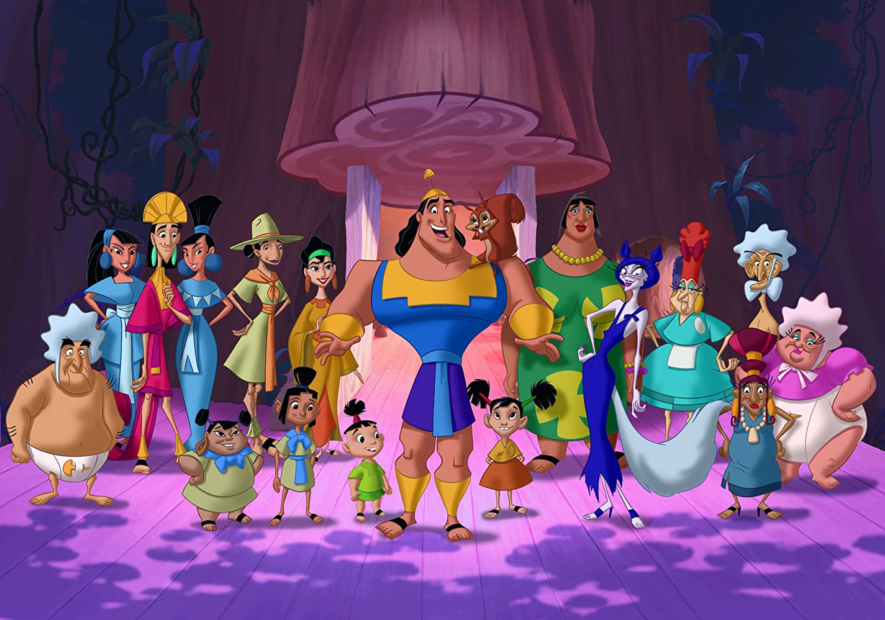

About Kronk
Kronk is the dim-witted, muscular, timid henchman of Yzma and the secondary antagonist of Disney's 2000 feature film The Emperor's New Groove and its television series as an anti-villain when he once again works for Yzma even though he is not ever the villain.
Kronk and his friends
Kronk's Characteristics
- Kronk can speak squirrel
- Kronk is an amazing chef
- Kronks speciality is spinach fondue
Kronk's Friends
Kronk can make friends with anyone. But his best friend is a squirrel called Bucky. Who hates Kuzco and Yzma.